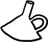

8 Mart bu sene beni gafil avladı, hem de en mağrur tarafımdan, çaktırmadan. Ne de olsa pek bir emindim zihnimdeki bazı kategorik ayrımların doğruluğundan. Kimi kadınlar "ev kedisi"dir, yerleşik, evcil, sıcak yuva düşkünü. Ayıptır söylemesi, "kimi" değil "çoğu" kadın böyledir. Geriye kalan kimileri ise "sokak kedisi"dir bir nevi, illaki bir ayağı özgürlükte demirli, yerleşme ve aile içinde mutlu mesut yaşama özürlü, dışarıyı, bilinmeyeni, geleceği keşfetme merakları içerinin sıcağına ağır basan kadınlar... Ne de olsa pek bir emindim benim bu kategorilerden hangisine uyduğumdan. Bunca göçebelik, bunca delilik, bunca seyahat, kök salmayı, yuva kurmayı, senebesene ismimin cismimin harfiyen bilindiği bir semtte, mesela hep aynı apartmanda yaşlanmayı, içine doğduğum kimlikte ölmeyi reddetmek... Yuvarlanan taş yosun tutmazmış. İşleyen demir ise pas. Ne yosun ne pas isterim hayatta diyerek, illaki akmalıyım, illaki gitmeliyim; varmak dahi o kadar umurumda değil, yani ulaşmak, olmak, ermek, yani yükselmek, başarmak, kotarmak, hiçbiri o kadar umurumda değil; aslolan gitmek, gidebilmek, bu bitimsiz yolculuk... Ne de olsa şimdiye değin en somut biçimiyle bir tek Woody Allen'dan duyduğum bir sloganı kendime şiar edinmiştim. "Kimi yazar vardır düzeni bozulmayagörsün panikler, yazamaz; düzensizlikte çalışamaz, üretemez. Bense tam tersine hayatım düzenli olursa yazamam."
Amenna! Aynen böyleydi, aynen böyle hâlâ. İllaki kaos olacak. Kan kardeşim kaos, vaktiyle kestik parmaklarımızı karşılıklı, karıştırdık kanlarımızı. Ebedi dostum. İllaki belirsizlik, anksiyete, için içini yiyecek, en yakınındakiler de seninle beraber kafayı. Sessizlikte bile yazamam ben, değil düzenli bir ortamda. İki sayfa ofiste yazdım diyelim, aklıma esti hop iki sayfa kütüphanede, derken iki sayfa bir kafede, iki sayfa sevgilimin evinde... Ben göçebe, metinler göçebe. Başladığı yerde biten romanım mı var? Kim korkar kaostan?
Ama işte usuldan, yavaştan hiç bilmediğim bir başka ses tırmalıyor kulaklarımı bugünlerde. Hiçbir zaman aile içinde yetişmemiş olan ben, şimdi aile kuramamaktan korkuyorum galiba. Yerleşememe korkusu. Çocuk doğuramama korkusu. Treni kaçırma korkusu... Hani hep o burun kıvırdığım, asla sapmadığım, muhtemelen şimdi de sapmayı istemediğim o öteki yol. Kadınlığın öbür yolu, malum yolu, anayolu. Böyle olmayı istediğimden değil, ama ya isteyemez olursam günün birinde? Seçeneğin varken seçmemek kolay, ama ya seçeneklerin ortadan kalkınca, ya o zaman? Eş-anne-düzenli olmayı seçmemek ayrı bir şey, seçememek ayrı. Hoppala! Ne oldu da ben otuz üç yaşımda birdenbire, bayram değil seyran değil, o yolu düşünürken yakaladım kendimi? Sokaklarda gizlice, varillerin üstünde, uzatıyorum başımı pencerelerin kenarlarından, merak bu ya, gizlice gözetliyorum ev kedilerinin hayatını. Belki de zannettiğim kadar, yani göründükleri kadar mutsuz ve sıkıcı değillerdir. Olabilir mi? Merak ki en çok yakışan ve en çok yanıltandır bizi. Nereden çıktı bu merak, bu gıpta şimdi?..
Sonra öteki ses gürlüyor içimde. Şimdi sen seni kemiren ve kahreden ama aynı zamanda besleyen, zenginleştiren ve bir Şaman gibi dirilten bu göçebelik olmadan yazabileceğini mi zannediyorsun? Şimdi sen monotonluktan ilham, düzenden güç alan ebedi bir tekerrür çarkına mı kendini kaptırmak istiyorsun? Ev kedisi olursan zihnin, hayal gücün, dilin, kabiliyetin ve üretkenliğin daralmaz mı zannediyorsun? Görmüyor musun böyle başlar insan kurumaya, damla damla! Kaç, uzaklaş bu tuzaktan, sakın ola yerleşme, evlenme, anneleşme, eşleşme, normalleşme... sakın ola... peki ya sonra?..
Dedim ya, 8 Mart bu aralar beni gafil avladı. Verecek cevabım, kutlayacak günüm yok bu sene.
İstanbul